Saved base seed 3468112780. Same input and direction; each pair shares its viewport and scale. Full parity still fails. Click a diagram to inspect its SVG.
Stately native · 1 crossings · 15 bends
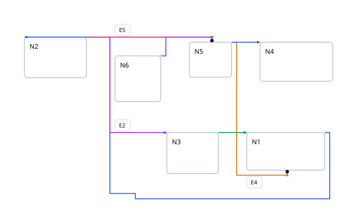
Real ELK · 0 crossings · 13 bends
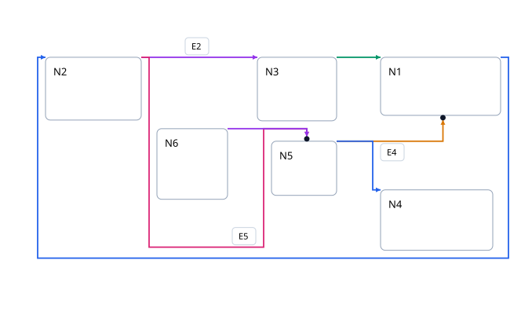
Stately native · 4 crossings · 35 bends
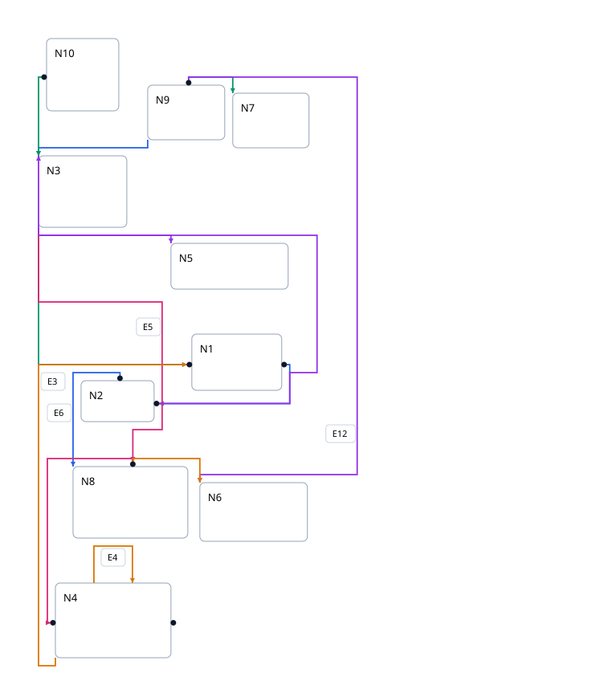
Real ELK · 3 crossings · 36 bends
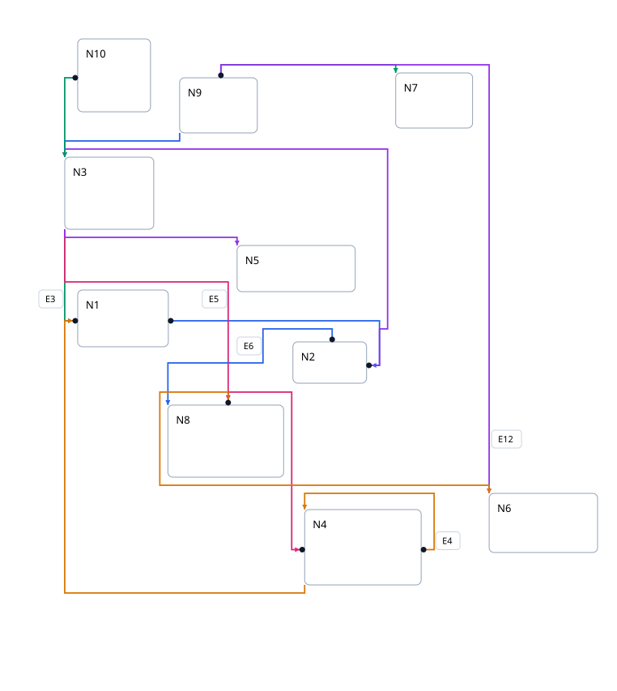
Stately native error
Error: Cyclic compaction constraints
Real ELK · 23 crossings · 50 bends
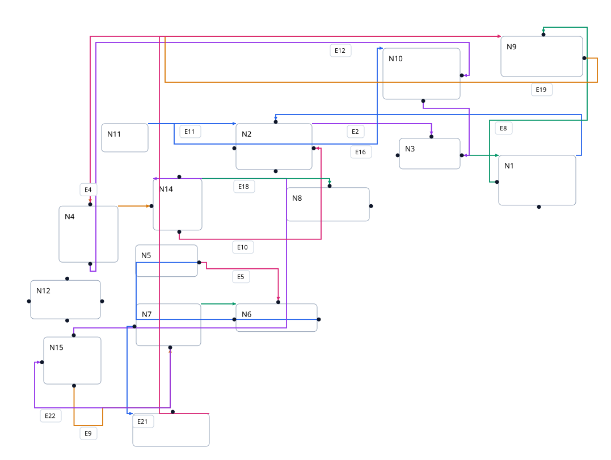
Stately native · 5 crossings · 105 bends
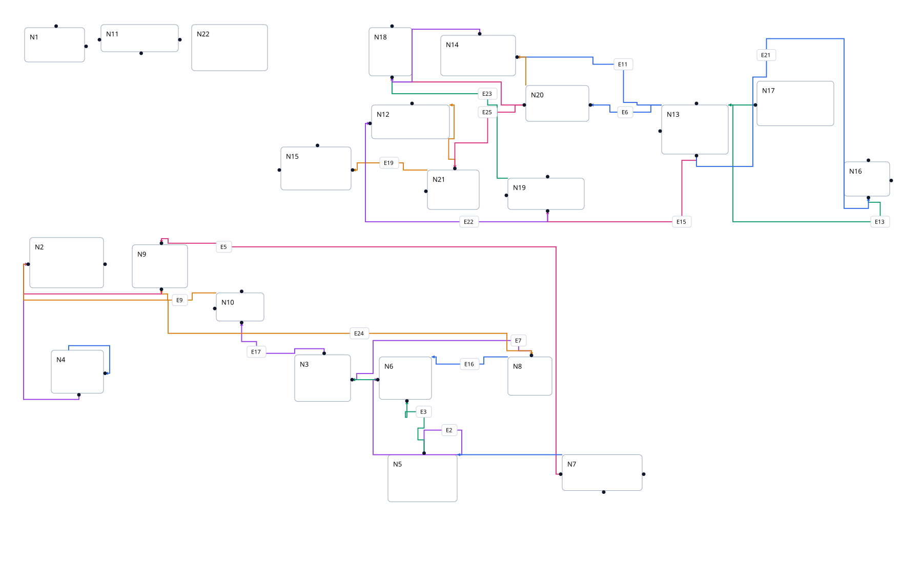
Real ELK · 8 crossings · 67 bends
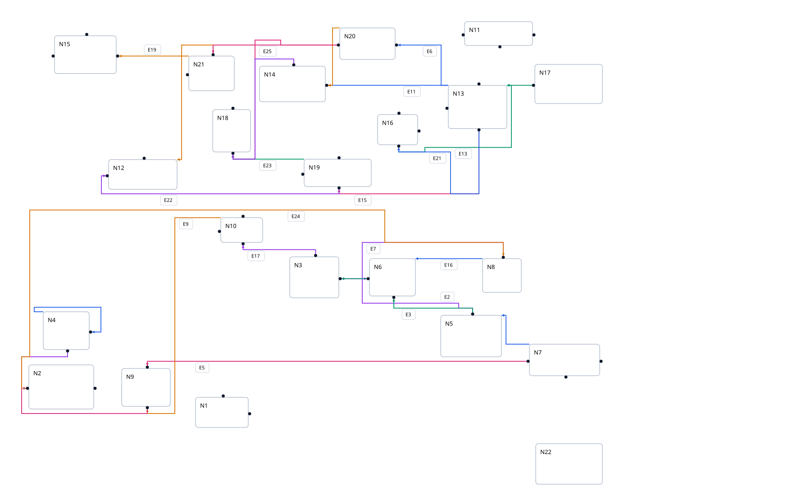
Stately native error
Error: Cyclic compaction constraints
Real ELK · 120 crossings · 183 bends
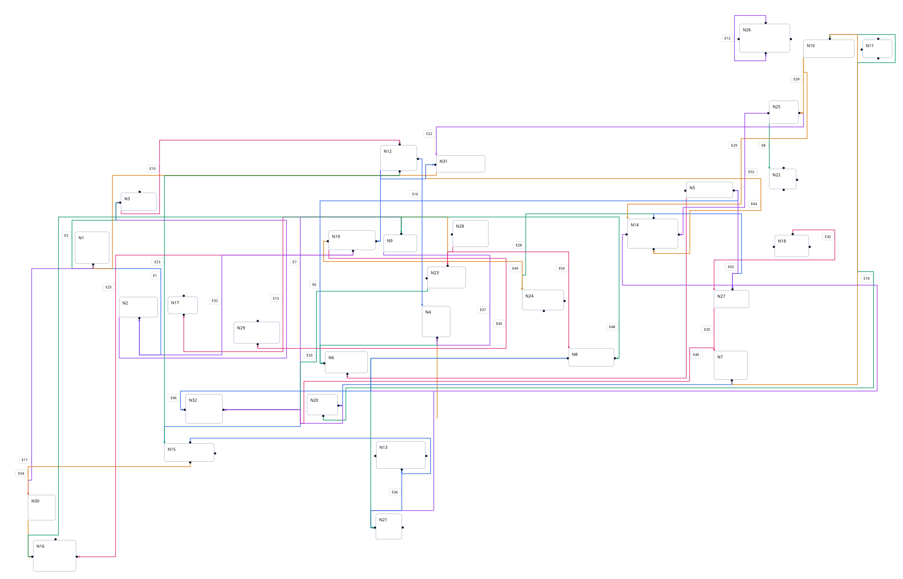
Stately native · 6 crossings · 51 bends
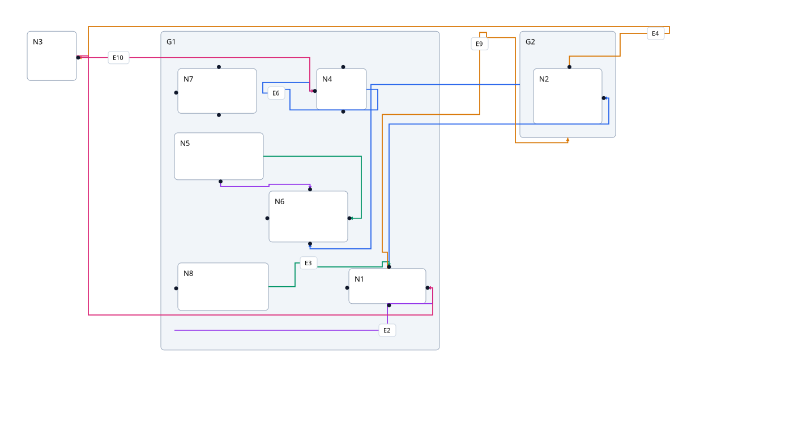
Real ELK · 3 crossings · 28 bends
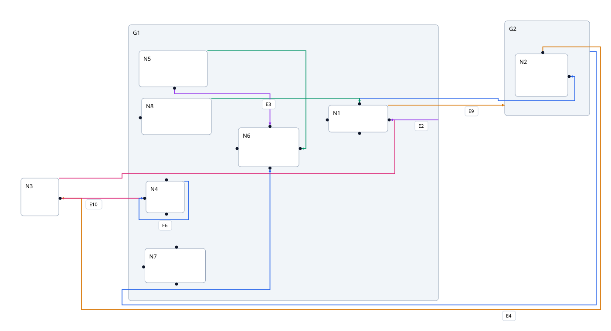
Stately native · 15 crossings · 97 bends
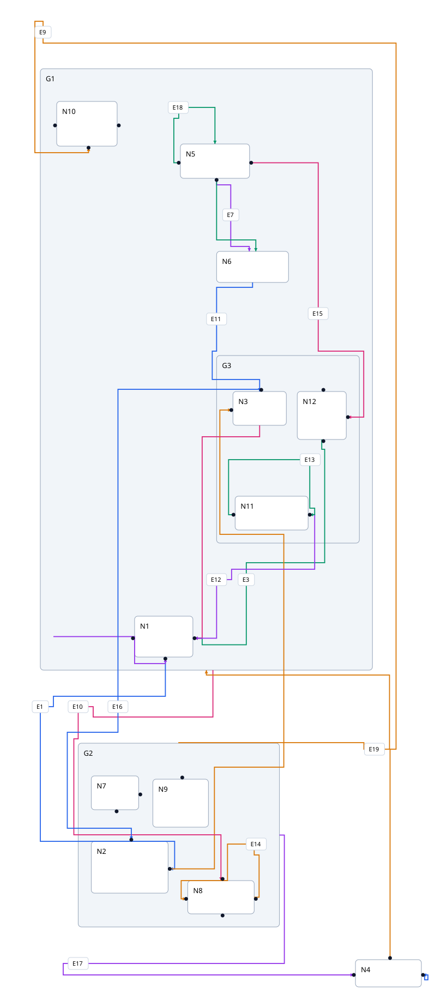
Real ELK error
Error: java.lang.IllegalStateException: Expected 5 hierarchical ports, but found only 0.
Stately native · 102 crossings · 216 bends
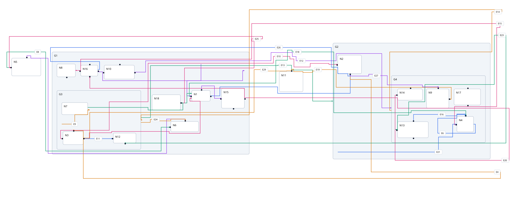
Real ELK · 83 crossings · 136 bends
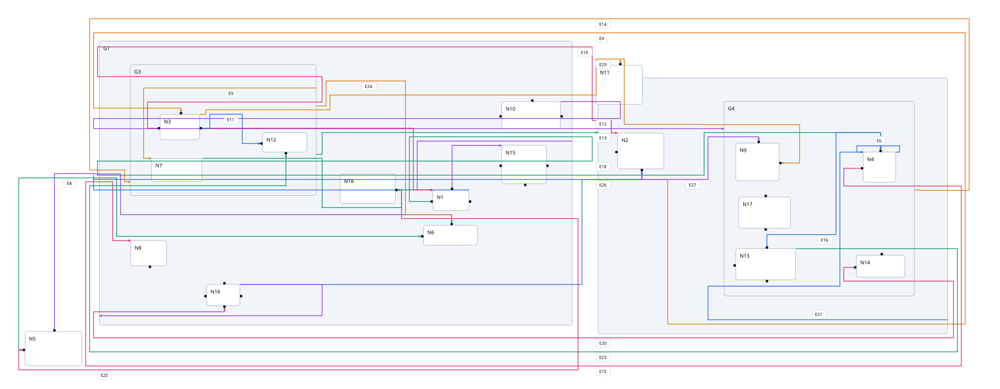
Stately native · 149 crossings · 198 bends
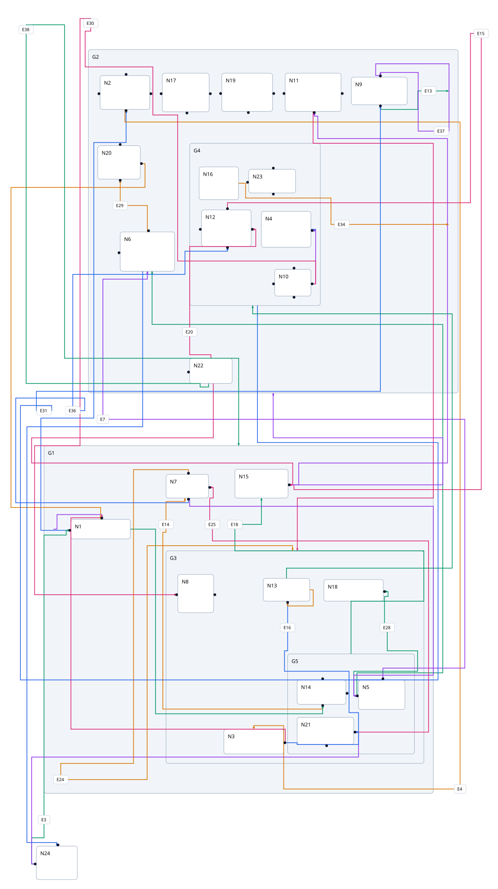
Real ELK error
Error: java.lang.IllegalStateException: Expected 1 hierarchical ports, but found only 0.
Stately native · 384 crossings · 326 bends
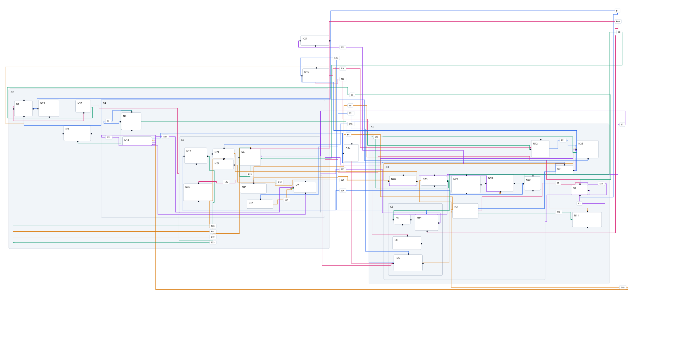
Real ELK · 125 crossings · 274 bends
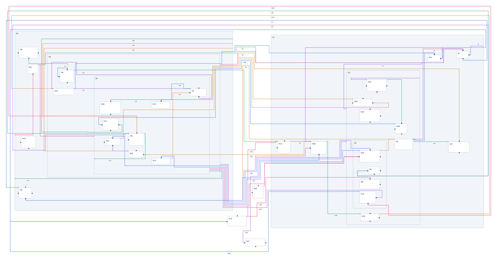